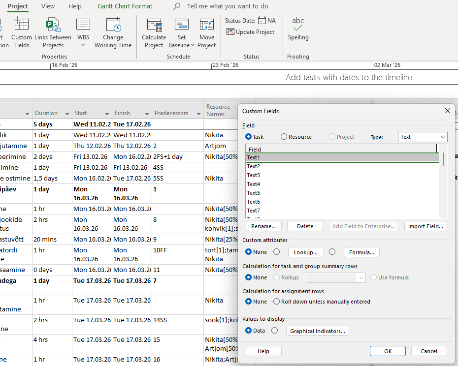
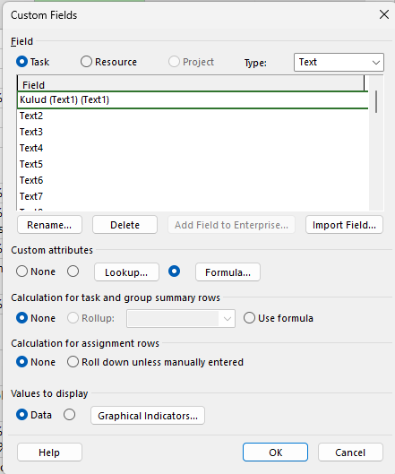
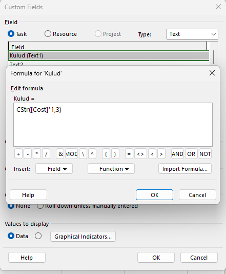
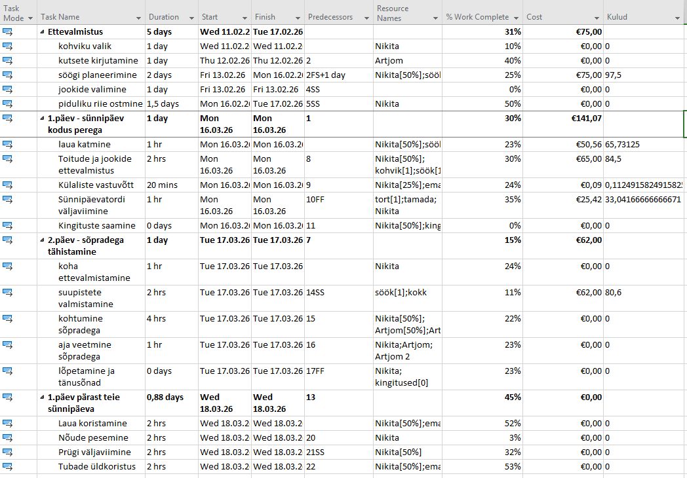

Kohandatud välja avamine
Paremklõpsa veeru päisel ja vali Custom Fields (või ava Project → Custom Fields). Avaneb dialoogiaken, kus saad luua uusi välju.

Uue välja loomine ja valemi sisestamine
Vali välja tüüp (nt Number või Text), klõpsa Rename ja anna väljale sobiv nimi. Seejärel klõpsa Formula ja sisesta soovitud valem — näiteks [Cost] / [Work] tunnikulude arvutamiseks.

Välja lisamine vaatesse
Pärast valemi salvestamist paremklõpsa Gantti tabeli veerupäisel, vali Insert Column ja otsi oma kohandatud välja nimi. Arvutustulemus kuvatakse automaatselt iga ülesande real.
CStr()- See on lühend väljendist Convert to String. Muudab arvu tekstiks

Miks kasutada arvutusväljasid?
Arvutusväljad võimaldavad automaatselt tuletada andmeid olemasolevatest veergudest — näiteks arvutada tunnikulusid, protsente või kestuste suhtarve. See säästab aega ja vähendab käsitsi arvutamise vigu.
Täielik tabel pärast toimingute sooritamist:
